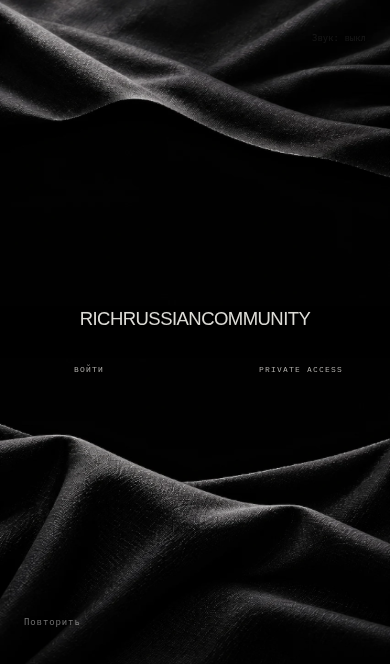
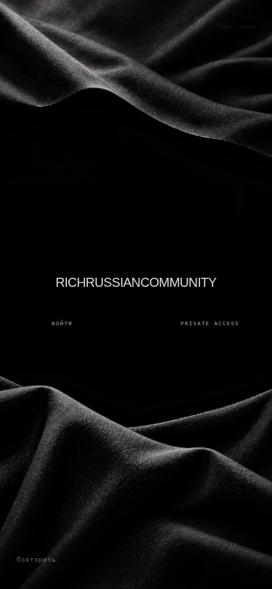
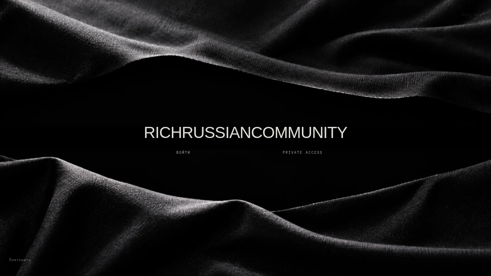

RICHRUSSIANCOMMUNITY
Кадры работающей production-сборки. Утверждённый рисунок ткани сохранён на двух отдельных деформируемых полотнищах; надпись и входы — HTML.

390×664 — пропорции области сайта из последнего скриншота. Панели браузера iOS не дорисовываются.
390×844. Chromium-эмуляция, не реальный телефон.Desktop

Разрез — проверка хореографии
Фактические кадры браузера с управляемыми часами, 24 кадра/с. Эта запись не измеряет аппаратный FPS.
Нативная запись вступления
Оба захвата
Мышь: верхнее и нижнее полотнища.Касание: оба полотнища. Индикатор захвата добавлен только в тестовую запись.
Свет в исходном арте запечён. Это сохранение конкретного образца с локальной деформацией, а не свободно переосвещаемый PBR-скан. Реальный телефон не тестировался.
Полный отчёт, измерения, источники и ограничения · Фигуры в кабинете